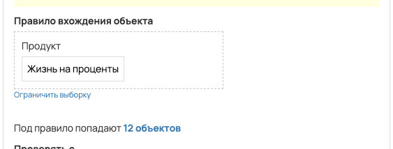
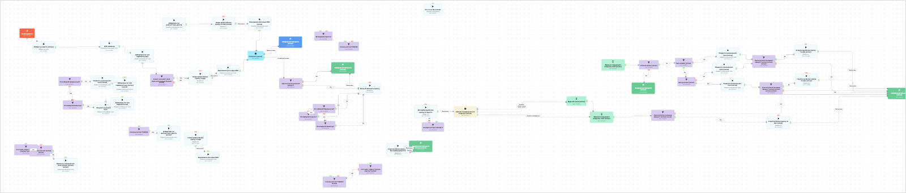

[AMO] [ED] Жизнь% 98097
- ID процесса:
2417006 - Объект: Заказы
- Статус: Ожидание событий
- Внутренняя страница: 2417006. [AMO] [ED] Жизнь% 98097
- GetCourse: Карточка | Схема процесса
Скриншоты процесса


Коротко для заказчика
- Главное: В процесс попадают заказы по продуктам с тегом «Жизнь%-AMO».
- Дальше он передает данные как: Пользователи и визиты, Оплаты и заказы.
- Связанных баз Vakas: 2.
Понятное описание процесса
- Процесс работает с объектом GetCourse: Заказы. Текущий статус процесса: Ожидание событий.
- На вход попадают данные так: В процесс попадают заказы по продуктам с тегом «Жизнь%-AMO».
- Техническое правило входа в GetCourse: Продукт (ID: 4265398; теги: Жизнь%-AMO).
- Внутри схемы есть дополнительные проверки/ожидания: 22. Основные блоки: «это crypto_niagara "Полное участие" за 590?»; «Клиент уже имеет такой заказ за последние 30 дней? (копия)»; «Оплатил? (копия)»; «Автомарафон Крипта?»; «Был на вебе? (копия)»; «Был до конца? (копия)».
- Дальше процесс делает прямые вызовы Vakas: 4. Напрямую задействованы базы: 88097, 87177.
- Передача: 88097. База 88097: Оплаты и заказы. Передаются параметры:
number,id,order_id,positions,costMoney,leftCostMoney,payedMoney,status,paymentLink,firstNameи другие. - Передача: 87177. База 87177: Пользователи и визиты. Передаются параметры:
name,email,phone,getcourse_user_id,komment_from_autoveb_for_amo,finished,web_p1. - Передача: 87177. База 87177: Пользователи и визиты. Передаются параметры:
name,email,phone,getcourse_user_id,komment_from_autoveb_for_amo,finished,vizit_vebinar,view_date_data,webinarId,bil_minut. - Передача: 88097. База 88097: Оплаты и заказы. Передаются параметры:
number,id,order_id,positions,costMoney,leftCostMoney,payedMoney,status,paymentLink,firstNameи другие. - Что происходит в amoCRM: Маршрут в amoCRM нужно проверить вручную. На входе в этап ЛИДОРУБЫ -> Новая заявка [73992646] база ищет дубль и может взять старую сделку только из заранее разрешенных этапов.
Ход процесса в GetCourse
- Схема состоит из 76 блоков и 103 переходов.
- По типам: стартов 1, условий/ожиданий 22, вызовов URL 4, изменений полей 6, финалов 5.
Блоки процесса: что делают и зачем нужны:
- Блок
41940823«Начало работы» (старт). Что делает: Запускает выполнение схемы для объекта, который попал под правило входа процесса. Зачем нужен: Нужен как точка входа: от него GetCourse начинает движение объекта по схеме. Дальше: если результат «Выполнено», идет в «Добавить в группу (копия)». - Блок
41940845«Добавить в группу (копия)» (операция user_addtogroup). Что делает: Выполняет служебный шаг схемы «Добавить в группу (копия)». Зачем нужен: Нужен как промежуточный технический шаг в схеме «Добавить в группу (копия)». Дальше: если результат «Выполнено», идет в «Доб название». - Блок
41940867«Доб название» (операция). Что делает: Выполняет служебный шаг схемы «Доб название». Зачем нужен: Нужен как промежуточный технический шаг в схеме «Доб название». Дальше: если результат «Выполнено», идет в «Добавляем тег для передачи в амо». - Блок
41940868«Добавляем тег для передачи в амо» (операция). Что делает: Выполняет служебный шаг схемы «Добавляем тег для передачи в амо». Зачем нужен: Нужен как промежуточный технический шаг в схеме «Добавляем тег для передачи в амо». Дальше: если результат «Выполнено», идет в «Клиент уже имеет такой заказ за последние 30 дней? (копия)». - Блок
41940825«Клиент уже имеет такой заказ за последние 30 дней? (копия)» (условие). Что делает: Проверяет ветвление «Клиент уже имеет такой заказ за последние 30 дней? (копия)», но текст условия в дампе не расшифрован. Зачем нужен: Нужен, чтобы разделить поток: подходящих пользователей/заказы отправить дальше, неподходящих перевести на другую ветку или завершить. Дальше: если результат «Нет», идет в «Новая заявка обновл сделку по кфи»; если результат «Да», идет в «Новая заявка обновл сделку по кфи». - Блок
41940857«Новая заявка обновл сделку по кфи» (операция). Что делает: Выполняет служебный шаг схемы «Новая заявка обновл сделку по кфи». Зачем нужен: Нужен как промежуточный технический шаг в схеме «Новая заявка обновл сделку по кфи». Дальше: если результат «Ошибка», идет в «n8n fail после Новая заявка обновл сделку по кфи #41940857»; если результат «Выполнено», идет в «n8n success после Новая заявка обновл сделку по кфи #41940857». - Блок
43526012«n8n success после Новая заявка обновл сделку по кфи #41940857» (операция). Что делает: Выполняет служебный шаг схемы «n8n success после Новая заявка обновл сделку по кфи #41940857». Зачем нужен: Нужен как промежуточный технический шаг в схеме «n8n success после Новая заявка обновл сделку по кфи #41940857». Дальше: если результат «Ошибка», идет в «База вакаса для новых КФИ»; если результат «Выполнено», идет в «База вакаса для новых КФИ». - Блок
41940858«База вакаса для новых КФИ» (операция). Что делает: Выполняет служебный шаг схемы «База вакаса для новых КФИ». Зачем нужен: Нужен как промежуточный технический шаг в схеме «База вакаса для новых КФИ». Дальше: если результат «Выполнено», идет в «Оплатил? (копия)». - Блок
41940827«Оплатил? (копия)» (ожидание условия). Что делает: Останавливает объект в ожидании нужного условия; точная формула в дампе не расшифрована. Зачем нужен: Нужен, чтобы не отправлять объект раньше времени: процесс ждет нужное событие, заказ, сегмент или другое условие. Дальше: если результат «Время истекло», идет в «Завершение процесса (копия)»; если результат «Условие выполнено», идет в «Еще не оплатил основной продукт?». - Блок
41940828«Завершение процесса (копия)» (завершение). Что делает: Завершает ветку процесса после выполненных проверок и действий. Зачем нужен: Нужен, чтобы закрыть текущую ветку и не гонять объект по процессу повторно. Дальше переходов нет: это конечная точка ветки. - Блок
41940846«Еще не оплатил основной продукт?» (условие). Что делает: Проверяет ветвление «Еще не оплатил основной продукт?», но текст условия в дампе не расшифрован. Зачем нужен: Нужен, чтобы разделить поток: подходящих пользователей/заказы отправить дальше, неподходящих перевести на другую ветку или завершить. Дальше: если результат «Нет», идет в «Завершение процесса (копия)»; если результат «Да», идет в «Жизнь% обновить сделку». - Блок
41940879«Жизнь% обновить сделку» (операция). Что делает: Выполняет служебный шаг схемы «Жизнь% обновить сделку». Зачем нужен: Нужен как промежуточный технический шаг в схеме «Жизнь% обновить сделку». Дальше: если результат «Ошибка», идет в «n8n fail после Жизнь% обновить сделку #41940879»; если результат «Выполнено», идет в «n8n success после Жизнь% обновить сделку #41940879». - Блок
43526043«n8n success после Жизнь% обновить сделку #41940879» (операция). Что делает: Выполняет служебный шаг схемы «n8n success после Жизнь% обновить сделку #41940879». Зачем нужен: Нужен как промежуточный технический шаг в схеме «n8n success после Жизнь% обновить сделку #41940879». Дальше: если результат «Ошибка», идет в «Завершение процесса (копия)»; если результат «Выполнено», идет в «Завершение процесса (копия)». - Блок
41940847«Завершение процесса (копия)» (завершение). Что делает: Завершает ветку процесса после выполненных проверок и действий. Зачем нужен: Нужен, чтобы закрыть текущую ветку и не гонять объект по процессу повторно. Дальше переходов нет: это конечная точка ветки. - Блок
43526046«n8n fail после Жизнь% обновить сделку #41940879» (операция). Что делает: Выполняет служебный шаг схемы «n8n fail после Жизнь% обновить сделку #41940879». Зачем нужен: Нужен как промежуточный технический шаг в схеме «n8n fail после Жизнь% обновить сделку #41940879». Дальше: если результат «Ошибка», идет в «Это Набор МК Продвинутый?»; если результат «Выполнено», идет в «Это Набор МК Продвинутый?». - Блок
41940880«Это Набор МК Продвинутый?» (условие). Что делает: Проверяет ветвление «Это Набор МК Продвинутый?», но текст условия в дампе не расшифрован. Зачем нужен: Нужен, чтобы разделить поток: подходящих пользователей/заказы отправить дальше, неподходящих перевести на другую ветку или завершить. Дальше: если результат «Нет», идет в «Это Набор МК Инвестор?»; если результат «Да», идет в «Жизнь% обновить сделку». - Блок
41940881«Это Набор МК Инвестор?» (условие). Что делает: Проверяет ветвление «Это Набор МК Инвестор?», но текст условия в дампе не расшифрован. Зачем нужен: Нужен, чтобы разделить поток: подходящих пользователей/заказы отправить дальше, неподходящих перевести на другую ветку или завершить. Дальше: если результат «Да», идет в «Жизнь% обновить сделку». - Блок
43526015«n8n fail после Новая заявка обновл сделку по кфи #41940857» (операция). Что делает: Выполняет служебный шаг схемы «n8n fail после Новая заявка обновл сделку по кфи #41940857». Зачем нужен: Нужен как промежуточный технический шаг в схеме «n8n fail после Новая заявка обновл сделку по кфи #41940857». Дальше: если результат «Ошибка», идет в «Клиент уже имеет такой заказ за последние 30 дней? (копия)»; если результат «Выполнено», идет в «Клиент уже имеет такой заказ за последние 30 дней? (копия)». - Блок
41940824«это crypto_niagara "Полное участие" за 590?» (условие). Что делает: Проверяет ветвление «это crypto_niagara "Полное участие" за 590?», но текст условия в дампе не расшифрован. Зачем нужен: Нужен, чтобы разделить поток: подходящих пользователей/заказы отправить дальше, неподходящих перевести на другую ветку или завершить. Дальше: если результат «Нет», идет в «Это полное участие? (копия) (копия)». - Блок
41940860«Это полное участие? (копия) (копия)» (условие). Что делает: Проверяет ветвление «Это полное участие? (копия) (копия)», но текст условия в дампе не расшифрован. Зачем нужен: Нужен, чтобы разделить поток: подходящих пользователей/заказы отправить дальше, неподходящих перевести на другую ветку или завершить. Дальше: если результат «Да», идет в «Изменить значение доп. поля (копия) (копия) (копия)». - Блок
41940861«Изменить значение доп. поля (копия) (копия) (копия)» (операция). Что делает: Выполняет служебный шаг схемы «Изменить значение доп. поля (копия) (копия) (копия)». Зачем нужен: Нужен как промежуточный технический шаг в схеме «Изменить значение доп. поля (копия) (копия) (копия)». Дальше переходов нет: это конечная точка ветки. - Блок
41940829«Автомарафон Крипта?» (условие). Что делает: Проверяет ветвление «Автомарафон Крипта?», но текст условия в дампе не расшифрован. Зачем нужен: Нужен, чтобы разделить поток: подходящих пользователей/заказы отправить дальше, неподходящих перевести на другую ветку или завершить. Дальше переходов нет: это конечная точка ветки. - Блок
41940831«Что-то не так (копия)» (операция notify_manager_operation). Что делает: Выполняет служебный шаг схемы «Что-то не так (копия)». Зачем нужен: Нужен как промежуточный технический шаг в схеме «Что-то не так (копия)». Дальше переходов нет: это конечная точка ветки. - Блок
41940834«Ждем до следующего вторника, 9:00 (копия)» (таймер). Что делает: Делает паузу или ждет заданное время перед следующим шагом. Зачем нужен: Нужен для задержки между проверкой и передачей, чтобы данные успели появиться или чтобы соблюсти нужный порядок обработки. Дальше: если результат «Выполнено», идет в «Условие (копия) (копия)». - Блок
41940854«Условие (копия) (копия)» (условие). Что делает: Проверяет ветвление «Условие (копия) (копия)», но текст условия в дампе не расшифрован. Зачем нужен: Нужен, чтобы разделить поток: подходящих пользователей/заказы отправить дальше, неподходящих перевести на другую ветку или завершить. Дальше: если результат «Нет», идет в «Завершение процесса (копия)»; если результат «Да», идет в «Был на вебе? (копия)». - Блок
41940835«Был на вебе? (копия)» (условие). Что делает: Проверяет ветвление «Был на вебе? (копия)», но текст условия в дампе не расшифрован. Зачем нужен: Нужен, чтобы разделить поток: подходящих пользователей/заказы отправить дальше, неподходящих перевести на другую ветку или завершить. Дальше: если результат «Нет», идет в «Изменить значение доп. поля (копия)»; если результат «Да», идет в «Был до конца? (копия)». - Блок
41940836«Был до конца? (копия)» (условие). Что делает: Проверяет ветвление «Был до конца? (копия)», но текст условия в дампе не расшифрован. Зачем нужен: Нужен, чтобы разделить поток: подходящих пользователей/заказы отправить дальше, неподходящих перевести на другую ветку или завершить. Дальше: если результат «Нет», идет в «Изменить значение доп. поля (копия)»; если результат «Да», идет в «Изменить значение доп. поля (копия)». - Блок
41940844«Изменить значение доп. поля (копия)» (изменение поля). Что делает: меняет полеkomment_from_autoveb_for_amo(Установить равным). значение: Был на вебе, досмотрел до конца Зачем нужен: Нужен, чтобы записать внутри GetCourse технический признак/значение, которое потом используется в передаче или логике ветвления. Дальше: если результат «Выполнено», идет в «Еще не оплатил основной продукт? (копия) (копия) (копия) (копия)». - Блок
41940850«Еще не оплатил основной продукт? (копия) (копия) (копия) (копия)» (условие). Что делает: Проверяет ветвление «Еще не оплатил основной продукт? (копия) (копия) (копия) (копия)», но текст условия в дампе не расшифрован. Зачем нужен: Нужен, чтобы разделить поток: подходящих пользователей/заказы отправить дальше, неподходящих перевести на другую ветку или завершить. Дальше: если результат «Нет», идет в «Завершение процесса (копия)»; если результат «Да», идет в «1 группа не обновл сделку по кфи (копия)». - Блок
41940839«1 группа не обновл сделку по кфи (копия)» (вызов URL). Что делает: Передает в Vakas: 87177. База 87177, канал «Пользователи и визиты» (GET); параметры:name,email,phone,getcourse_user_id,komment_from_autoveb_for_amo,finished,vizit_vebinar,view_date_data,webinarId,bil_minut; timeout 300 сек. Зачем нужен: Нужен, чтобы передать подходящий объект в 87177. База 87177; дальше Маршрут в amoCRM нужно проверить вручную. Дальше: если результат «Ошибка», идет в «n8n fail после 1 группа не обновл сделку по кфи (копия) #41940839»; если результат «Выполнено», идет в «n8n success после 1 группа не обновл сделку по кфи (копия) #41940839». - Блок
43525996«n8n success после 1 группа не обновл сделку по кфи (копия) #41940839» (операция). Что делает: Выполняет служебный шаг схемы «n8n success после 1 группа не обновл сделку по кфи (копия) #41940839». Зачем нужен: Нужен как промежуточный технический шаг в схеме «n8n success после 1 группа не обновл сделку по кфи (копия) #41940839». Дальше: если результат «Ошибка», идет в «Завершение процесса (копия)»; если результат «Выполнено», идет в «Завершение процесса (копия)». - Блок
41940841«Завершение процесса (копия)» (завершение). Что делает: Завершает ветку процесса после выполненных проверок и действий. Зачем нужен: Нужен, чтобы закрыть текущую ветку и не гонять объект по процессу повторно. Дальше переходов нет: это конечная точка ветки. - Блок
43526001«n8n fail после 1 группа не обновл сделку по кфи (копия) #41940839» (операция). Что делает: Выполняет служебный шаг схемы «n8n fail после 1 группа не обновл сделку по кфи (копия) #41940839». Зачем нужен: Нужен как промежуточный технический шаг в схеме «n8n fail после 1 группа не обновл сделку по кфи (копия) #41940839». Дальше: если результат «Ошибка», идет в «Еще не оплатил основной продукт? (копия) (копия) (копия) (копия)»; если результат «Выполнено», идет в «Еще не оплатил основной продукт? (копия) (копия) (копия) (копия)». - Блок
41940843«Изменить значение доп. поля (копия)» (изменение поля). Что делает: меняет полеkomment_from_autoveb_for_amo(Установить равным). значение: Был на вебе, не досмотрел до конца Зачем нужен: Нужен, чтобы записать внутри GetCourse технический признак/значение, которое потом используется в передаче или логике ветвления. Дальше: если результат «Выполнено», идет в «Еще не оплатил основной продукт? (копия) (копия) (копия)». - Блок
41940849«Еще не оплатил основной продукт? (копия) (копия) (копия)» (условие). Что делает: Проверяет ветвление «Еще не оплатил основной продукт? (копия) (копия) (копия)», но текст условия в дампе не расшифрован. Зачем нужен: Нужен, чтобы разделить поток: подходящих пользователей/заказы отправить дальше, неподходящих перевести на другую ветку или завершить. Дальше: если результат «Нет», идет в «Завершение процесса (копия)»; если результат «Да», идет в «2 группа не обновл сделку по кфи (копия)». - Блок
41940838«2 группа не обновл сделку по кфи (копия)» (вызов URL). Что делает: Передает в Vakas: 87177. База 87177, канал «Пользователи и визиты» (GET); параметры:name,email,phone,getcourse_user_id,komment_from_autoveb_for_amo,finished,web_p1; timeout 300 сек. Зачем нужен: Нужен, чтобы передать подходящий объект в 87177. База 87177; дальше Маршрут в amoCRM нужно проверить вручную. Дальше: если результат «Ошибка», идет в «n8n fail после 2 группа не обновл сделку по кфи (копия) #41940838»; если результат «Выполнено», идет в «n8n success после 2 группа не обновл сделку по кфи (копия) #41940838». - Блок
43525990«n8n success после 2 группа не обновл сделку по кфи (копия) #41940838» (операция). Что делает: Выполняет служебный шаг схемы «n8n success после 2 группа не обновл сделку по кфи (копия) #41940838». Зачем нужен: Нужен как промежуточный технический шаг в схеме «n8n success после 2 группа не обновл сделку по кфи (копия) #41940838». Дальше: если результат «Ошибка», идет в «Завершение процесса (копия)»; если результат «Выполнено», идет в «Завершение процесса (копия)». - Блок
43525993«n8n fail после 2 группа не обновл сделку по кфи (копия) #41940838» (операция). Что делает: Выполняет служебный шаг схемы «n8n fail после 2 группа не обновл сделку по кфи (копия) #41940838». Зачем нужен: Нужен как промежуточный технический шаг в схеме «n8n fail после 2 группа не обновл сделку по кфи (копия) #41940838». Дальше: если результат «Ошибка», идет в «Еще не оплатил основной продукт? (копия) (копия) (копия)»; если результат «Выполнено», идет в «Еще не оплатил основной продукт? (копия) (копия) (копия)». - Блок
41940842«Изменить значение доп. поля (копия)» (изменение поля). Что делает: меняет полеkomment_from_autoveb_for_amo(Установить равным). значение: Не был на вебе Зачем нужен: Нужен, чтобы записать внутри GetCourse технический признак/значение, которое потом используется в передаче или логике ветвления. Дальше: если результат «Выполнено», идет в «Еще не оплатил основной продукт? (копия) (копия) (копия)». - Блок
41940853«Завершение процесса (копия)» (завершение). Что делает: Завершает ветку процесса после выполненных проверок и действий. Зачем нужен: Нужен, чтобы закрыть текущую ветку и не гонять объект по процессу повторно. Дальше переходов нет: это конечная точка ветки. - Блок
41940855«это crypto_niagara "Полное участие" за 590?» (условие). Что делает: Проверяет ветвление «это crypto_niagara "Полное участие" за 590?», но текст условия в дампе не расшифрован. Зачем нужен: Нужен, чтобы разделить поток: подходящих пользователей/заказы отправить дальше, неподходящих перевести на другую ветку или завершить. Дальше: если результат «Нет», идет в «полное участие? 7566062 (копия)». - Блок
41940865«полное участие? 7566062 (копия)» (условие). Что делает: Проверяет ветвление «полное участие? 7566062 (копия)», но текст условия в дампе не расшифрован. Зачем нужен: Нужен, чтобы разделить поток: подходящих пользователей/заказы отправить дальше, неподходящих перевести на другую ветку или завершить. Дальше переходов нет: это конечная точка ветки. - Блок
41940862«полное участие? 7566062» (условие). Что делает: Проверяет ветвление «полное участие? 7566062», но текст условия в дампе не расшифрован. Зачем нужен: Нужен, чтобы разделить поток: подходящих пользователей/заказы отправить дальше, неподходящих перевести на другую ветку или завершить. Дальше: если результат «Нет», идет в «Добавляем тег диагностика_крипта (копия)». - Блок
41940859«Добавляем тег диагностика_крипта (копия)» (операция). Что делает: Выполняет служебный шаг схемы «Добавляем тег диагностика_крипта (копия)». Зачем нужен: Нужен как промежуточный технический шаг в схеме «Добавляем тег диагностика_крипта (копия)». Дальше переходов нет: это конечная точка ветки. - Блок
41940864«полное участие? 7566062» (условие). Что делает: Проверяет ветвление «полное участие? 7566062», но текст условия в дампе не расшифрован. Зачем нужен: Нужен, чтобы разделить поток: подходящих пользователей/заказы отправить дальше, неподходящих перевести на другую ветку или завершить. Дальше переходов нет: это конечная точка ветки. - Блок
41940869«Это Набор МК продвинутый?» (условие). Что делает: Проверяет ветвление «Это Набор МК продвинутый?», но текст условия в дампе не расшифрован. Зачем нужен: Нужен, чтобы разделить поток: подходящих пользователей/заказы отправить дальше, неподходящих перевести на другую ветку или завершить. Дальше: если результат «Нет», идет в «Это Набор МК Инвестор?»; если результат «Да», идет в «Изменить значение доп. поля (копия)». - Блок
41940826«Изменить значение доп. поля (копия)» (изменение поля). Что делает: меняет полеorder_name_amo(Установить равным). значение: мастер-классВИП6 Зачем нужен: Нужен, чтобы записать внутри GetCourse технический признак/значение, которое потом используется в передаче или логике ветвления. Дальше: если результат «Выполнено», идет в «Добавляем тег для передачи в амо (копия) (копия)». - Блок
41940863«Добавляем тег для передачи в амо (копия) (копия)» (операция). Что делает: Выполняет служебный шаг схемы «Добавляем тег для передачи в амо (копия) (копия)». Зачем нужен: Нужен как промежуточный технический шаг в схеме «Добавляем тег для передачи в амо (копия) (копия)». Дальше переходов нет: это конечная точка ветки. - Блок
41940873«Это Набор МК Инвестор?» (условие). Что делает: Проверяет ветвление «Это Набор МК Инвестор?», но текст условия в дампе не расшифрован. Зачем нужен: Нужен, чтобы разделить поток: подходящих пользователей/заказы отправить дальше, неподходящих перевести на другую ветку или завершить. Дальше: если результат «Да», идет в «Изменить значение доп. поля». - Блок
41940874«Изменить значение доп. поля» (операция). Что делает: Выполняет служебный шаг схемы «Изменить значение доп. поля». Зачем нужен: Нужен как промежуточный технический шаг в схеме «Изменить значение доп. поля». Дальше: если результат «Выполнено», идет в «Добавляем тег для передачи в амо». - Блок
41940875«Добавляем тег для передачи в амо» (операция). Что делает: Выполняет служебный шаг схемы «Добавляем тег для передачи в амо». Зачем нужен: Нужен как промежуточный технический шаг в схеме «Добавляем тег для передачи в амо». Дальше переходов нет: это конечная точка ветки. - Блок
41940871«Это Набор МК Новичок?» (условие). Что делает: Проверяет ветвление «Это Набор МК Новичок?», но текст условия в дампе не расшифрован. Зачем нужен: Нужен, чтобы разделить поток: подходящих пользователей/заказы отправить дальше, неподходящих перевести на другую ветку или завершить. Дальше: если результат «Нет», идет в «Это Набор МК Продвинутый?»; если результат «Да», идет в «Жизнь% обновить сделку». - Блок
41940830«Сейчас понедельник или вторник? (копия)» (таймер). Что делает: Делает паузу или ждет заданное время перед следующим шагом. Зачем нужен: Нужен для задержки между проверкой и передачей, чтобы данные успели появиться или чтобы соблюсти нужный порядок обработки. Дальше: если результат «Ни один из выбранных», идет в «Ждем до следующего вторника, 9:00 (копия)»; если результат «понедельник <br/>18:00 - 23:59», идет в «Ждем 48 часов (копия)»; если результат «вторник <br/>00:00 - 23:59», идет в «Ждем 48 часов (копия)». - Блок
41940832«Ждем 48 часов (копия)» (таймер). Что делает: Делает паузу или ждет заданное время перед следующим шагом. Зачем нужен: Нужен для задержки между проверкой и передачей, чтобы данные успели появиться или чтобы соблюсти нужный порядок обработки. Дальше: если результат «Выполнено», идет в «Ждем до следующего вторника, 9:00 (копия)». - Блок
41940833«Ждем до следующего вторника, 9:00 (копия)» (таймер). Что делает: Делает паузу или ждет заданное время перед следующим шагом. Зачем нужен: Нужен для задержки между проверкой и передачей, чтобы данные успели появиться или чтобы соблюсти нужный порядок обработки. Дальше: если результат «Выполнено», идет в «Еще не оплатил основной продукт? (копия) (копия)». - Блок
41940837«Новая заявка обновл сделку по кфи (копия)» (вызов URL). Что делает: Передает в Vakas: 88097. База 88097, канал «Оплаты и заказы» (GET); параметры:number,id,order_id,positions,costMoney,leftCostMoney,payedMoney,status,paymentLink,firstName,lastName,name,email,phoneи другие; timeout 300 сек. Зачем нужен: Нужен, чтобы передать подходящий объект в 88097. База 88097; дальше На входе в этап ЛИДОРУБЫ -> Новая заявка [73992646] база ищет дубль и может взять старую сделку только из заранее разрешенных этапов. Дальше: если результат «Ошибка», идет в «n8n fail после Новая заявка обновл сделку по кфи (копия) #41940837»; если результат «Выполнено», идет в «n8n success после Новая заявка обновл сделку по кфи (копия) #41940837». - Блок
41940840«2 группа обновл сделку по кфи (копия)» (вызов URL). Что делает: Передает в Vakas: 88097. База 88097, канал «Оплаты и заказы» (GET); параметры:number,id,order_id,positions,costMoney,leftCostMoney,payedMoney,status,paymentLink,firstName,lastName,name,email,phoneи другие; timeout 300 сек. Зачем нужен: Нужен, чтобы передать подходящий объект в 88097. База 88097; дальше На входе в этап ЛИДОРУБЫ -> Новая заявка [73992646] база ищет дубль и может взять старую сделку только из заранее разрешенных этапов. Дальше: если результат «Ошибка», идет в «n8n fail после 2 группа обновл сделку по кфи (копия) #41940840»; если результат «Выполнено», идет в «n8n success после 2 группа обновл сделку по кфи (копия) #41940840». - Блок
41940848«Еще не оплатил основной продукт? (копия) (копия)» (условие). Что делает: Проверяет ветвление «Еще не оплатил основной продукт? (копия) (копия)», но текст условия в дампе не расшифрован. Зачем нужен: Нужен, чтобы разделить поток: подходящих пользователей/заказы отправить дальше, неподходящих перевести на другую ветку или завершить. Дальше: если результат «Нет», идет в «Завершение процесса (копия)»; если результат «Да», идет в «2 группа обновл сделку по кфи (копия)». - Блок
41940851«База вакаса для новых КФИ (копия)» (изменение поля). Что делает: меняет полеlast_base_vakas(Установить равным). значение: 88097 Зачем нужен: Нужен, чтобы записать внутри GetCourse технический признак/значение, которое потом используется в передаче или логике ветвления. Дальше: если результат «Выполнено», идет в «Оплатил? (копия)». - Блок
41940852«Добавляем тег диагностика_крипта» (изменение поля). Что делает: меняет полеdeal_tag_1(Установить равным). значение: Автомарафон_КК Зачем нужен: Нужен, чтобы записать внутри GetCourse технический признак/значение, которое потом используется в передаче или логике ветвления. Дальше: если результат «Выполнено», идет в «Новая заявка обновл сделку по кфи (копия)». - Блок
41940866«Автовебинар обновл сделку по Крипто» (операция). Что делает: Выполняет служебный шаг схемы «Автовебинар обновл сделку по Крипто». Зачем нужен: Нужен как промежуточный технический шаг в схеме «Автовебинар обновл сделку по Крипто». Дальше: если результат «Ошибка», идет в «n8n fail после Автовебинар обновл сделку по Крипто #41940866»; если результат «Выполнено», идет в «n8n success после Автовебинар обновл сделку по Крипто #41940866». - Блок
41940870«2 группа обновл сделку по Автовебинар Крипта» (операция). Что делает: Выполняет служебный шаг схемы «2 группа обновл сделку по Автовебинар Крипта». Зачем нужен: Нужен как промежуточный технический шаг в схеме «2 группа обновл сделку по Автовебинар Крипта». Дальше: если результат «Ошибка», идет в «n8n fail после 2 группа обновл сделку по Автовебинар Крипта #41940870»; если результат «Выполнено», идет в «n8n success после 2 группа обновл сделку по Автовебинар Крипта #41940870». - Блок
41940872«Завершение процесса (копия) (копия)» (завершение). Что делает: Завершает ветку процесса после выполненных проверок и действий. Зачем нужен: Нужен, чтобы закрыть текущую ветку и не гонять объект по процессу повторно. Дальше переходов нет: это конечная точка ветки. - Блок
41940876«Новая заявка обновл сделку по кфи» (операция). Что делает: Выполняет служебный шаг схемы «Новая заявка обновл сделку по кфи». Зачем нужен: Нужен как промежуточный технический шаг в схеме «Новая заявка обновл сделку по кфи». Дальше: если результат «Ошибка», идет в «n8n fail после Новая заявка обновл сделку по кфи #41940876»; если результат «Выполнено», идет в «n8n success после Новая заявка обновл сделку по кфи #41940876». - Блок
41940877«База вакаса для новых КФИ» (операция). Что делает: Выполняет служебный шаг схемы «База вакаса для новых КФИ». Зачем нужен: Нужен как промежуточный технический шаг в схеме «База вакаса для новых КФИ». Дальше переходов нет: это конечная точка ветки. - Блок
41940878«Это КриптоСтарт (4261167)?» (условие). Что делает: Проверяет ветвление «Это КриптоСтарт (4261167)?», но текст условия в дампе не расшифрован. Зачем нужен: Нужен, чтобы разделить поток: подходящих пользователей/заказы отправить дальше, неподходящих перевести на другую ветку или завершить. Дальше: если результат «Нет», идет в «Автовебинар обновл сделку по Крипто». - Блок
43525985«n8n success после Новая заявка обновл сделку по кфи (копия) #41940837» (операция). Что делает: Выполняет служебный шаг схемы «n8n success после Новая заявка обновл сделку по кфи (копия) #41940837». Зачем нужен: Нужен как промежуточный технический шаг в схеме «n8n success после Новая заявка обновл сделку по кфи (копия) #41940837». Дальше: если результат «Ошибка», идет в «База вакаса для новых КФИ (копия)»; если результат «Выполнено», идет в «База вакаса для новых КФИ (копия)». - Блок
43525987«n8n fail после Новая заявка обновл сделку по кфи (копия) #41940837» (операция). Что делает: Выполняет служебный шаг схемы «n8n fail после Новая заявка обновл сделку по кфи (копия) #41940837». Зачем нужен: Нужен как промежуточный технический шаг в схеме «n8n fail после Новая заявка обновл сделку по кфи (копия) #41940837». Дальше: если результат «Ошибка», идет в «Добавляем тег диагностика_крипта»; если результат «Выполнено», идет в «Добавляем тег диагностика_крипта». - Блок
43526006«n8n success после 2 группа обновл сделку по кфи (копия) #41940840» (операция). Что делает: Выполняет служебный шаг схемы «n8n success после 2 группа обновл сделку по кфи (копия) #41940840». Зачем нужен: Нужен как промежуточный технический шаг в схеме «n8n success после 2 группа обновл сделку по кфи (копия) #41940840». Дальше: если результат «Ошибка», идет в «Завершение процесса (копия)»; если результат «Выполнено», идет в «Завершение процесса (копия)». - Блок
43526009«n8n fail после 2 группа обновл сделку по кфи (копия) #41940840» (операция). Что делает: Выполняет служебный шаг схемы «n8n fail после 2 группа обновл сделку по кфи (копия) #41940840». Зачем нужен: Нужен как промежуточный технический шаг в схеме «n8n fail после 2 группа обновл сделку по кфи (копия) #41940840». Дальше: если результат «Ошибка», идет в «Еще не оплатил основной продукт? (копия) (копия)»; если результат «Выполнено», идет в «Еще не оплатил основной продукт? (копия) (копия)». - Блок
43526019«n8n success после Автовебинар обновл сделку по Крипто #41940866» (операция). Что делает: Выполняет служебный шаг схемы «n8n success после Автовебинар обновл сделку по Крипто #41940866». Зачем нужен: Нужен как промежуточный технический шаг в схеме «n8n success после Автовебинар обновл сделку по Крипто #41940866». Дальше: если результат «Ошибка», идет в «Сейчас понедельник или вторник? (копия)»; если результат «Выполнено», идет в «Сейчас понедельник или вторник? (копия)». - Блок
43526023«n8n fail после Автовебинар обновл сделку по Крипто #41940866» (операция). Что делает: Выполняет служебный шаг схемы «n8n fail после Автовебинар обновл сделку по Крипто #41940866». Зачем нужен: Нужен как промежуточный технический шаг в схеме «n8n fail после Автовебинар обновл сделку по Крипто #41940866». Дальше: если результат «Ошибка», идет в «Это КриптоСтарт (4261167)?»; если результат «Выполнено», идет в «Это КриптоСтарт (4261167)?». - Блок
43526027«n8n success после 2 группа обновл сделку по Автовебинар Крипта #41940870» (операция). Что делает: Выполняет служебный шаг схемы «n8n success после 2 группа обновл сделку по Автовебинар Крипта #41940870». Зачем нужен: Нужен как промежуточный технический шаг в схеме «n8n success после 2 группа обновл сделку по Автовебинар Крипта #41940870». Дальше: если результат «Ошибка», идет в «Завершение процесса (копия) (копия)»; если результат «Выполнено», идет в «Завершение процесса (копия) (копия)». - Блок
43526030«n8n fail после 2 группа обновл сделку по Автовебинар Крипта #41940870» (операция). Что делает: Выполняет служебный шаг схемы «n8n fail после 2 группа обновл сделку по Автовебинар Крипта #41940870». Зачем нужен: Нужен как промежуточный технический шаг в схеме «n8n fail после 2 группа обновл сделку по Автовебинар Крипта #41940870». Дальше: если результат «Ошибка», идет в «2 группа обновл сделку по Автовебинар Крипта»; если результат «Выполнено», идет в «2 группа обновл сделку по Автовебинар Крипта». - Блок
43526035«n8n success после Новая заявка обновл сделку по кфи #41940876» (операция). Что делает: Выполняет служебный шаг схемы «n8n success после Новая заявка обновл сделку по кфи #41940876». Зачем нужен: Нужен как промежуточный технический шаг в схеме «n8n success после Новая заявка обновл сделку по кфи #41940876». Дальше: если результат «Ошибка», идет в «База вакаса для новых КФИ»; если результат «Выполнено», идет в «База вакаса для новых КФИ». - Блок
43526038«n8n fail после Новая заявка обновл сделку по кфи #41940876» (операция). Что делает: Выполняет служебный шаг схемы «n8n fail после Новая заявка обновл сделку по кфи #41940876». Зачем нужен: Нужен как промежуточный технический шаг в схеме «n8n fail после Новая заявка обновл сделку по кфи #41940876». Дальше: если результат «Ошибка», идет в «Новая заявка обновл сделку по кфи»; если результат «Выполнено», идет в «Новая заявка обновл сделку по кфи».
Что именно входит в процесс
- В процесс попадают заказы по продуктам с тегом «Жизнь%-AMO».
- По описанию к этому тегу относятся продукты: «Продукт».
Как именно настроено правило
- В amoCRM процесс ориентирован на воронки: «Лидорубы».
- В описании зафиксированы этапы обработки: «Новый заказ: Этап "Новая заявка"» и «ч/о: Этап "2 группа"».
- Название сделки в amo: «"ВИП5"».
- Тег сделки в amo: «"диагностика_Вторая зарплатаВИП5"».
Куда и как передается дальше
| База Vakas | Что передается | Этап в amoCRM | Что происходит со сделкой |
|---|---|---|---|
| 87177. База 87177 | Пользователи и визиты | не найдено в дампе | Маршрут в amoCRM нужно проверить вручную. |
| 88097. База 88097 | Оплаты и заказы | ЛИДОРУБЫ -> Новая заявка [73992646] | На входе в этап ЛИДОРУБЫ -> Новая заявка [73992646] база ищет дубль и может взять старую сделку только из заранее разрешенных этапов. |